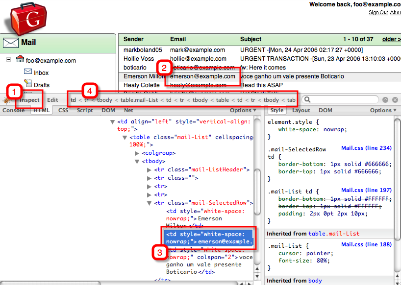
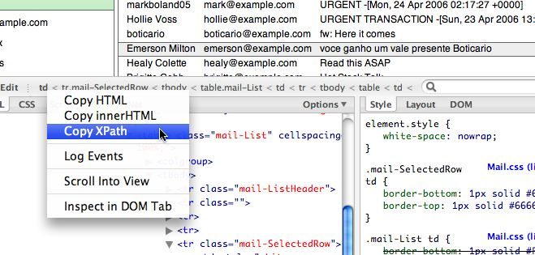
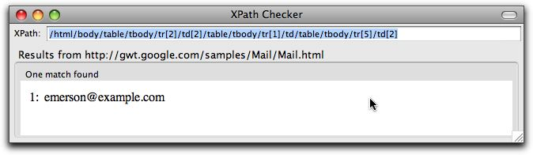
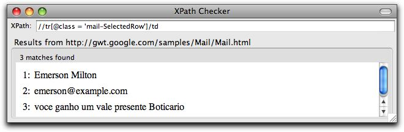
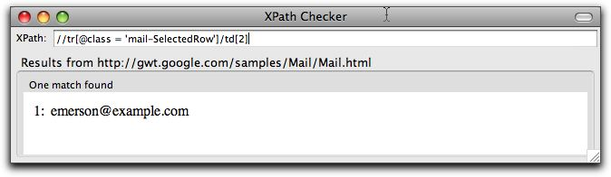
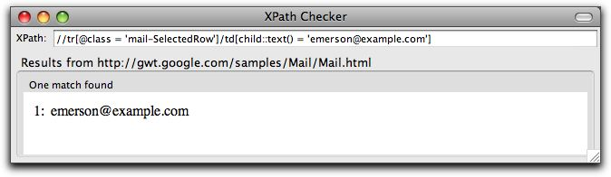
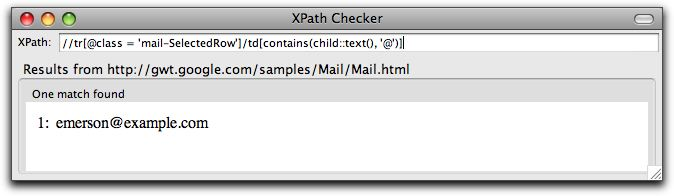
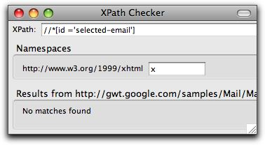

XPath trial and error
Brian Slesinsky has a great tool called
XPath Checker for Firefox. Its a plugin, that is well worth installing into Firefox.
There is another, more well known plugin called
Firebug
for Firefox. It allows you to inspect a page at run time. With
the advent of AJAX web apps, there where a page structure is only
apparent at run time, then it is invaluable. Read more about Firebug at
its site.
It
would be great if the features of XPath checker were rolled into
Firebug! But for now, they are not so install them both into
Firefox if you evolving a test suite.
Using the 'email' example of the
GWT sample applications,
to illustrate the point, we have loaded it up and gone into firebug (below). Clicking
'Inspect'' (1) in Firebug's toolbar and clicking on a node in the page
(2) takes you to the relevant html that represents it (3). There
are some breadcrumbs that show where you are in the page (4)......

If you right-click on that breadcrumbs place, you can get to a menu that will give you xpath for it...

Using that menu, gives the following as the xpath for that node ...
/html/body/table/tbody/tr[2]/td[2]/table/tbody/tr/td/table/tbody/tr[5]/td[2]
Bug
that is too unweildy for use in a Selenium script. Use XPath
Checker to make it more concise. Shown here with the original long (and
ugly) Xpath locator for that node, finding exactly one matching node:

After
looking again at the node in Firebug, we can modify the XPath to
the following, and get closer, but have too many results:

Here we try again, knowing that its array element 2 that were are interested in:

That.s
much better, but we may want to survive colum reordering. Perhaps
we knew the email address we were looking for in the first place:

Or maybe we knew that it was an email address in that field, and could leverage the fact that all emails contain @ characters:

So
XPath checker allows us to play with Xpath expressions making them more
terse and resiliant to change. You can cut/paste them out of
XPath Checker and into your test scripts.
Our advice is to use ID attrubutes where you can though:

This works great, except when the application you're testing has no ID attributes.